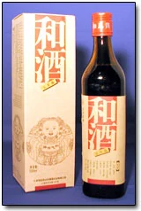
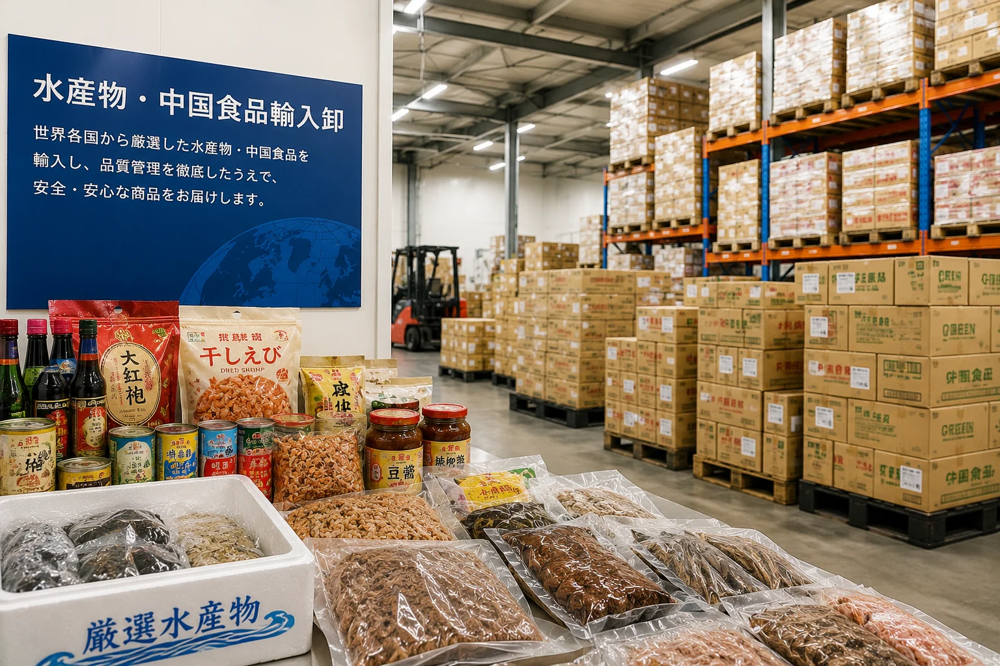
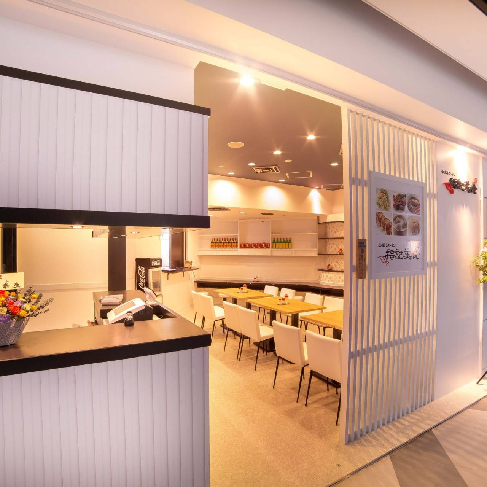

食の現場から、輸入卸まで。
株式会社福進発展は、1995年の創業以来、中華レストラン「海老専家」を中心に飲食店運営を行ってきました。
現在は、飲食店運営で培った現場感覚を活かし、紹興酒・中国酒の輸入卸販売、水産物・中国食品の輸入卸業務も展開しています。
株式会社福進発展は、1995年に中華レストラン「海老専家」の経営を主体として設立されました。
株式会社福進発展は、1995年の創業以来、中華レストラン「海老専家」を中心に飲食店運営を行ってきました。
現在は、飲食店運営で培った現場感覚を活かし、紹興酒・中国酒の輸入卸販売、水産物・中国食品の輸入卸業務も展開しています。
福進発展の事業は、中華レストラン経営を原点に、中国酒と食品の輸入卸へ広がっています。
Restaurant
「海老専家」を中心に、本格的な中国料理を提供する店舗運営を行っています。

Liquor Import & Wholesale
中国酒の中でも代表的な紹興酒や老酒、和酒などを取り扱い、飲食店運営で培った知見を活かした酒類の輸入卸販売を行っています。

Food Import & Wholesale
水産物や中国食品の輸入・卸業務を行い、飲食事業者や取引先へ安定した商品供給を行っています。
目的に合わせて、各ブランド・事業サイトをご覧いただけます。

飯田橋本店を中心とした海老専家の公式サイトです。
ebisenka-honten.jp
シーバンスにある福記美食の店舗サイトです。
ebisenka-seavans.com
店舗前販売や弁当対応に関する情報は、弁当事業サイトにてご案内しています。
ebisenka.jp紹興酒・和酒などの中国酒に関する情報をまとめています。
詳しく見る水産物・中国食品の輸入卸業務についてご案内します。
詳しく見るレストラン運営、輸入卸、商品管理など、福進発展の事業を支える幅広い職種で仲間を募集します。
レストラン事業、紹興酒・中国酒輸入卸販売、水産物・中国食品輸入卸業務に関するお問い合わせはこちらから。
03-3269-1461
03-3266-8758
FAX：03-3269-1923事業内容やお取引に関するお問い合わせは、メールにてご連絡ください。
info@fukushin-e.co.jp